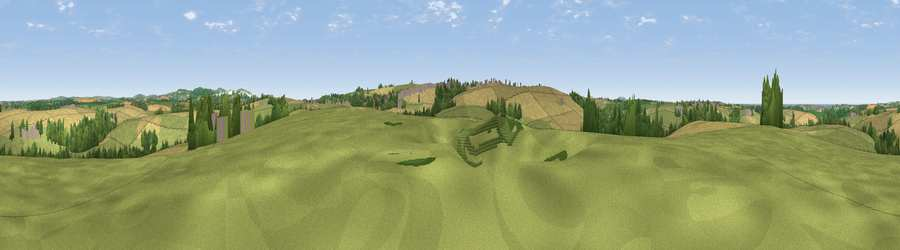

Viewpoint near St. Newlyn East
#23231 in England · top 43% of its area beats it · near St. Newlyn EastWhere it is
The exact computed spot (SW 84975 55875). Click the marker for map links.
The view, rendered

A 360° render of this exact spot computed from the terrain model, tree cover and land cover — summer colours, afternoon light, calibrated against photographs of famous viewpoints. Real trees, hedges and buildings will differ in detail.
The panorama
Grey silhouette: terrain skyline in each direction (720 bearings, Earth curvature and refraction included). Dashed green: skyline with trees (+15 m) and buildings (+8 m) as obstacles. Blue strip: how far the ground is visible on each bearing.
Where the view opens
Wedge length = distance to the farthest visible ground on that bearing (vegetation-aware). Rings at 10, 25 and 50 km.
What fills the view
45% grassland · 41% cropland · 10% woodland · 3% built-up ·
Angular shares of the visible panorama (visual magnitude), not map area. Landscape diversity 0.48 (0–1 Shannon).
Key numbers
More beautiful places nearby
The staircase of upgrades: each row has a higher view potential than everything closer. Driving times are estimates from straight-line distance, calibrated against real road routing — check an actual route before setting out.
| Place | Direction | Drive | Score |
|---|---|---|---|
| Viewpoint near St. Newlyn East | SSW · 2 km | ~5 min | 70.7 |
| Viewpoint near Penhale | E · 7 km | ~14 min | 81.7 |
| Viewpoint near Foxhole | E · 13 km | ~23 min | 86.4 |
| Viewpoint near Stenalees | E · 15 km | ~27 min | 88.0 |
| Viewpoint near Crackington Haven | NE · 47 km | ~68 min | 88.1 |
| Viewpoint near Combe Martin | NE · 118 km | ~143 min | 88.9 |
| Holdstone Hill | NE · 120 km | ~144 min | 90.2 |
| The Knoll | ENE · 171 km | ~192 min | 91.0 |
50.36340, -5.02471 · source: screening · position refined by local search. Computed location — check access rights before visiting.